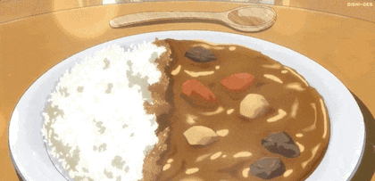
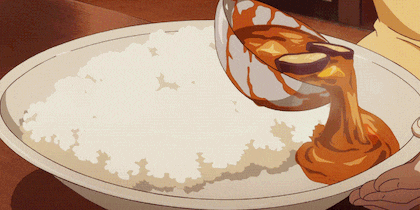

Description
Japanese curry is a classic homemade comfort food, often featured in romance anime. It's also a beloved traditional dish in Japan — and always tastes better when it's made with love.

Ingredients
- 1 tablespoon vegetable oil, or more as needed
- 1 ¾ pounds beef chuck, cut into 2-inch cubes
- 3 onions, quartered
- 1 tablespoon ketchup
- 1 ½ teaspoons Worcestershire sauce
- 1 pinch cayenne pepper, or to taste (Optional)
- water to cover
- 4 carrots, cut into 2-inch pieces
- 1 cube chicken bouillon (Optional)
- 3 medium potatoes, cut into 3-inch chunks
- 1 ½ (3.5 ounce) containers Japanese curry roux, or more to taste
Steps
- Heat oil in a 6-quart pot over medium-high heat. Add beef and saute until brown, 5 to 7 minutes. Add onions and cook until starting to soften, about 3 minutes. Add ketchup and Worcestershire sauce. Stir to coat. Add cayenne pepper. Pour in water to cover mixture by 1 or 2 inches. Add carrots and bouillon.
- Simmer, skimming fat off the surface of the broth as needed, for 30 minutes. Add potatoes. Stir in 1 package of curry roux and let dissolve; add remaining curry as needed to achieve desired thickness. Continue simmering until beef and vegetables are tender, about 30 minutes more.
NOTES
- Use any beef stew meat you prefer.
- Substitute soy sauce for the Worcestershire if desired.
- Curry roux is found in boxes in the international aisle or an international grocery store. There are many brands with varying heat levels. I like S&B and Vermont Curry. I usually mix the two brands. The more roux you use the thicker the sauce.
- As with most stews, the longer you simmer the better it will taste. This can also be frozen without the potatoes.
Nutrition Facts
- 360 Calories
- 15g Fat
- 40g Carbs
- 16g Protein